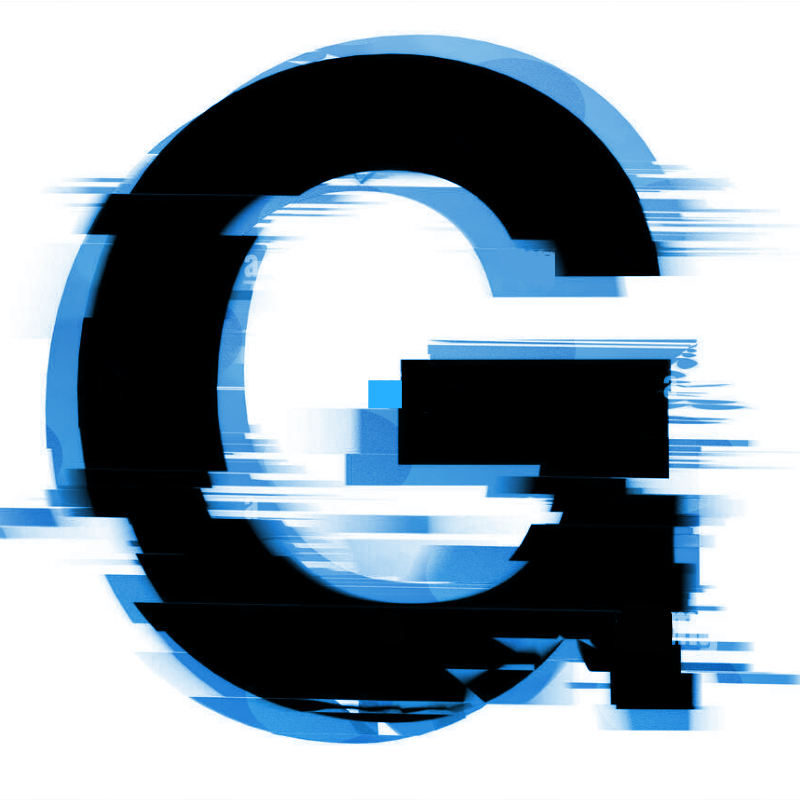
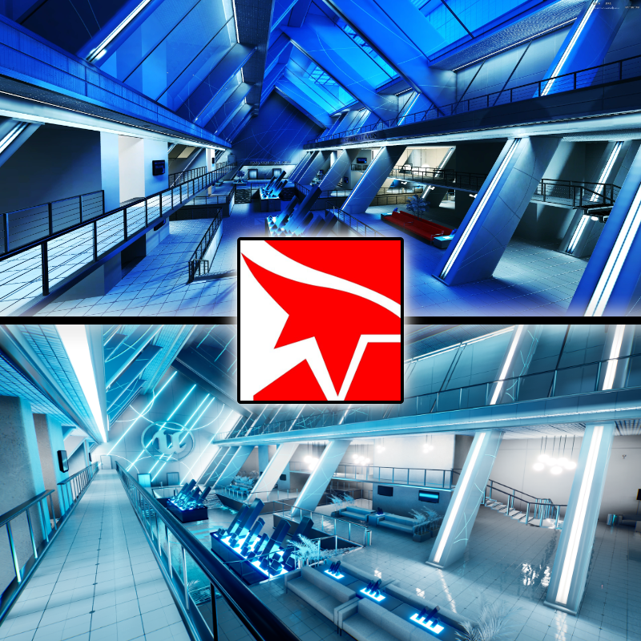
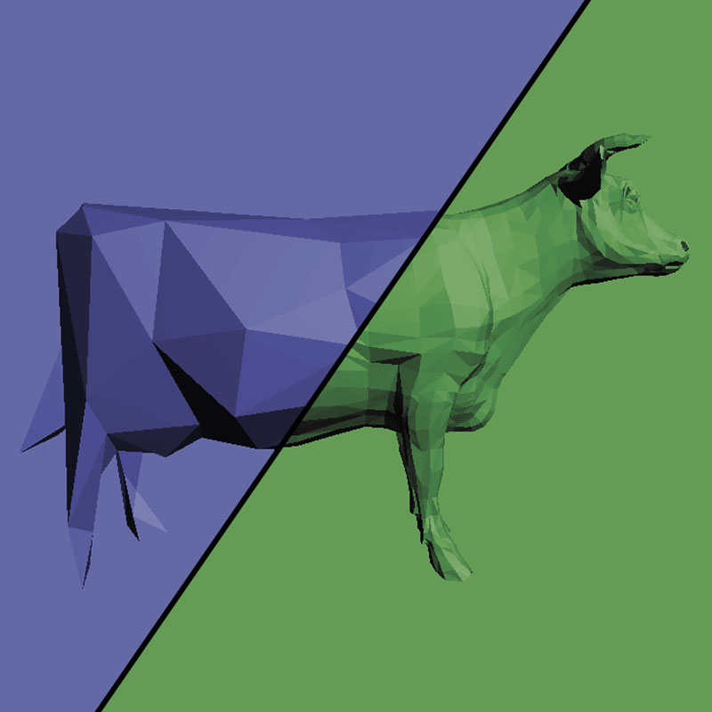
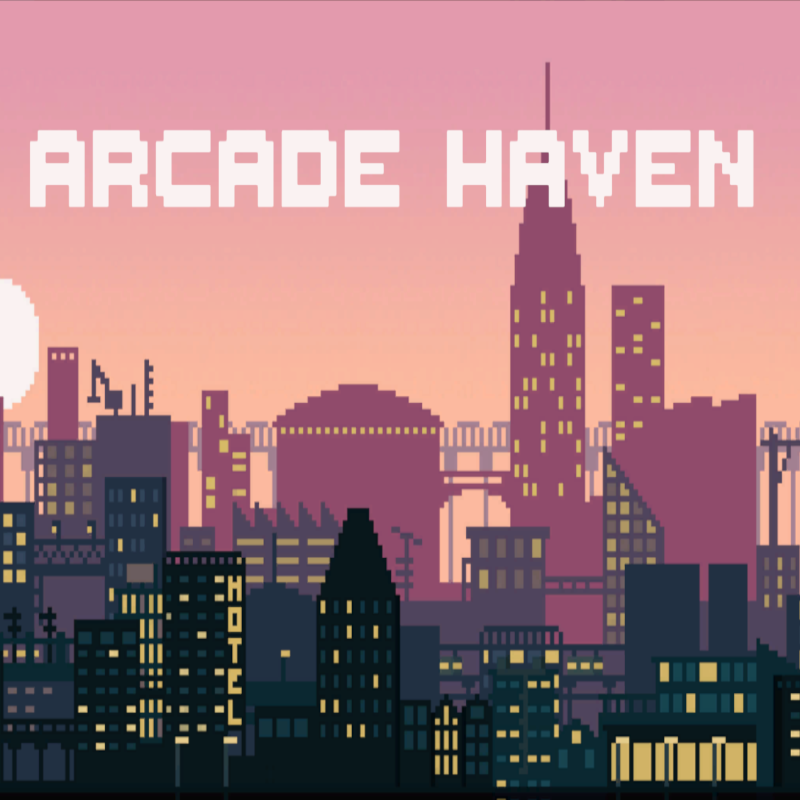
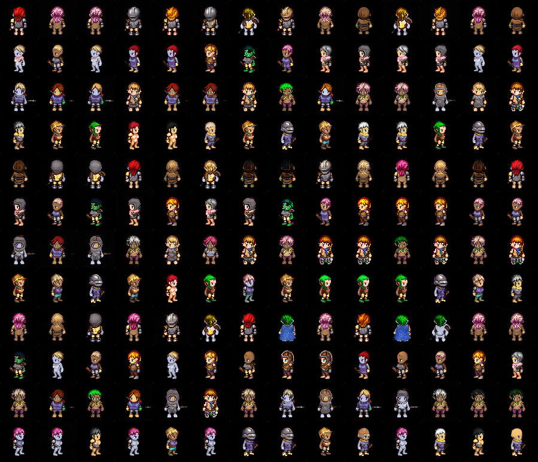

Next.js social media platform
A social media platform for video games developed using the Next.js framework with JavaScript, Bootstrap and Python (Flask).
Developed as part of the course Advanced Web Programming together with my project partner Weixion Zheng.
The project is currently not hosted.
A short project demonstration and an in-depth technical explaination can be found in the screencasts below.

Unreal Engine 5 environment
A 3D environment inspired by Mirrior's Edge including a character implementations created in Unreal Engine 5 .
The environment was created as part of the 3D Computer Graphics course.
Further information can be found in the project reports and presentation below as well as In-Engine screenshots.

Modeling and Animation
The laboratories of the course Modeling and Animation covered various interesting topics and gave technical insights
how meshes are created, altered, and rendered.
Detailed descriptions of each topics can be found in the lab reports below.

Arcade Haven
(video game - finalist in the Li.U Game Awards 2023)
Arcade Haven is a 2D management video game prototype created in the Unity engine. The individual project was a part of the Design and Programming of Computer Games (TDDD23) course.
The game plan as well as demonstrations of the game can be found below. Note that the game plan is more extensive than the project's scope of the course.

Comparing different GAN architectures to generate 2D character sprites
A comparison between multiple types of Generative Adversarial Network architectures and
exploration of different approaches to generate 2D character pixel sprites.
The project was executed as part of the course Artificial intelligence for interactive media.
More details can be found in the report below.
Monte Carlo Ray Tracer (ongoing)
A Monte Carlo ray tracer developed as part of the course Advanced Global Illumination.
The renderer will include transparent, perfectly reflecting objects, but also Lambertian reflections.
Additionally, a simple photon mapping scheme will be implemented.
The renderer is being written in C++.
More details can be found in the upcoming report.